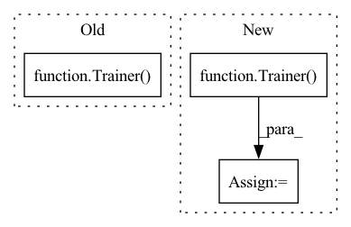

Pattern ID :20355

Before Change
train_data, test_data, valid_data = dataloader["train_data"], dataloader["test_data"], dataloader["valid_data"]
trainer = Trainer(config, model, logger)
best_valid_score, best_valid_result = trainer.fit(train_data, valid_data, verbose=False)
test_result = trainer.evaluate(test_data)
return {
After Change
train_data, test_data, valid_data = dataloader["train_data"], dataloader["test_data"], dataloader["valid_data"]
trainer = Trainer(config, model)
best_valid_score, best_valid_result = trainer.fit(train_data, valid_data, verbose=False)
test_result = trainer.evaluate(test_data)
return {
In pattern: SUPERPATTERN
Frequency: 4
Non-data size: 3
Instances
Fragment ID: 66024077
Project Name: rucaibox/recbole
Commit Name: d932cccd1e2ec1cf4df3c2c5c87b35162e81c86f
Time: 2020-08-05
Author: 893833413@qq.com
File Name: run_hyper.py
M Class Name: AnonimousClass
N Class Name: AnonimousClass
M Method Name: objective_function(3)
N Method Name: objective_function(3)
M Parent Class:
N Parent Class:
M File Name: run_hyper.py
N File Name: run_hyper.py
M Start Line: 37
M End Line: 49
N Start Line: 37
N End Line: 47
'>
Before Change
scheduler = torch.optim.lr_scheduler.StepLR(optim, config["training"]["lr_drop"])
// Build trainer and start training
trainer = Trainer(
train_loader, val_loader, model, criterion, optim, scheduler, device, config
)
trainer.run()
if __name__ == "__main__":
After Change
write_json(config, path_to_run / "config.json")
// Build trainer and start training
trainer = Trainer(
train_loader, val_loader, model, criterion, optim, scheduler, device, config, path_to_run
)
trainer.run()
if __name__ == "__main__":
'>
Fragment ID: 66024074
Project Name: bwittmann/transoar
Commit Name: 37c7e4ab63c3a5f501e3bb151f9c52d204bbdcc0
Time: 2021-11-22
Author: bastian.wittmann@tum.de
File Name: scripts/train.py
M Class Name: AnonimousClass
N Class Name: AnonimousClass
M Method Name: train(1)
N Method Name: train(1)
M Parent Class:
N Parent Class:
M File Name: scripts/train.py
N File Name: scripts/train.py
M Start Line: 15
M End Line: 40
N Start Line: 17
N End Line: 47
'>
Before Change
write_json(config, path_to_run / "config.json")
// Build trainer and start training
trainer = Trainer(
train_loader, val_loader, model, criterion, optim, scheduler, device, config, path_to_run
)
trainer.run()
if __name__ == "__main__":
After Change
write_json(config, path_to_run / "config.json")
// Build trainer and start training
trainer = Trainer(
train_loader, val_loader, model, criterion, optim, scheduler, device, config,
path_to_run, epoch, metric_start_val
)
trainer.run()
if __name__ == "__main__":
'>
Fragment ID: 66024073
Project Name: bwittmann/transoar
Commit Name: 943b60f71cbfae5fcb65729b42c3b9464b433db2
Time: 2021-11-29
Author: bastian.wittmann@tum.de
File Name: scripts/train.py
M Class Name: AnonimousClass
N Class Name: AnonimousClass
M Method Name: train(2)
N Method Name: train(1)
M Parent Class:
N Parent Class:
M File Name: scripts/train.py
N File Name: scripts/train.py
M Start Line: 17
M End Line: 51
N Start Line: 17
N End Line: 67
'>
Before Change
sampler = AsyncSampler(env, num_workers=num_workers)
trainer = Trainer(
agent,
sampler,
None,
max_frames,
max_episodes
)
trainer.start_training()
def _make_writer(self, agent_name, env_name,
After Change
sampler = AsyncSampler(env, num_workers=num_workers)
eval_sampler = AsyncSampler(env)
trainer = Trainer(
agent,
sampler,
eval_sampler,
max_frames,
max_episodes
)
trainer.start_training()
def _make_writer(self, agent_name, env_name,
'>
Fragment ID: 66024070
Project Name: syuntoku14/pytorch-rl-il
Commit Name: 3d3db373da29e4ce86d99efcd996503f105e526f
Time: 2020-04-12
Author: syuntoku14@gmail.com
File Name: tests/experiments/experiment_test.py
M Class Name: MockExperiment
N Class Name: MockExperiment
M Method Name: __init__(7)
N Method Name: __init__(7)
M Parent Class: Experiment
N Parent Class: Experiment
M File Name: tests/experiments/experiment_test.py
N File Name: tests/experiments/experiment_test.py
M Start Line: 57
M End Line: 67
N Start Line: 58
N End Line: 69